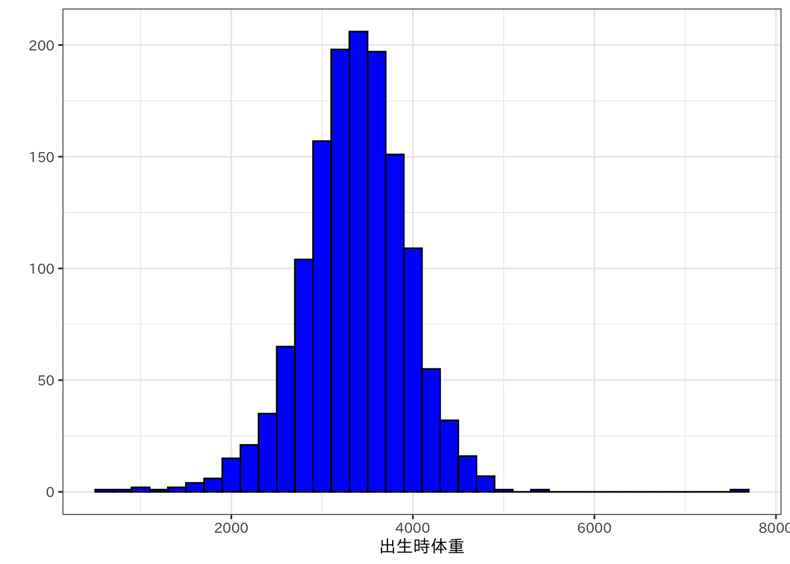
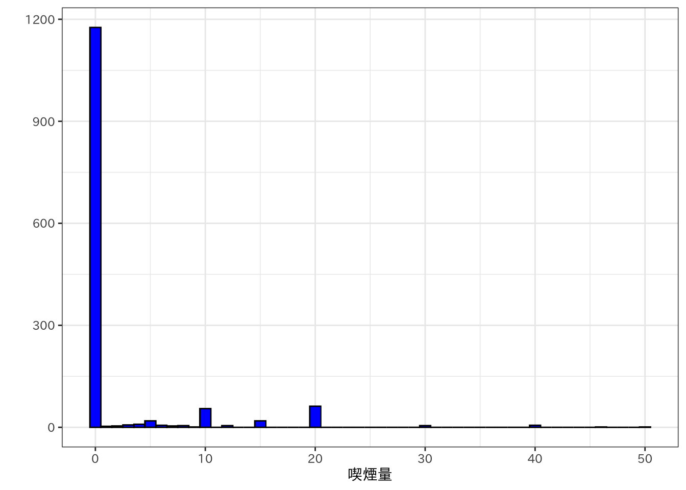
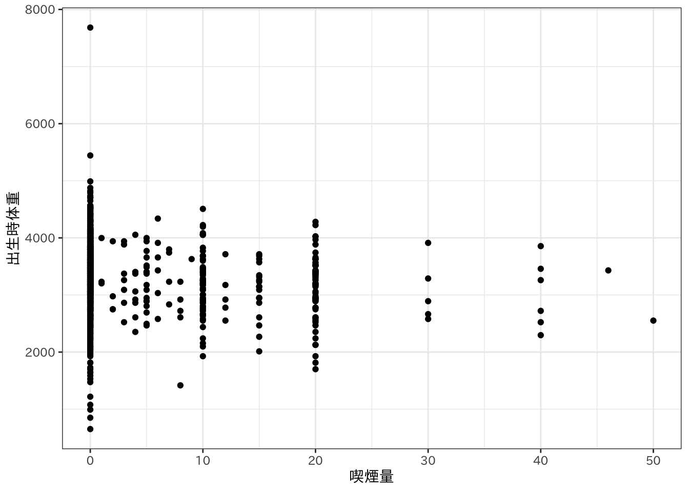
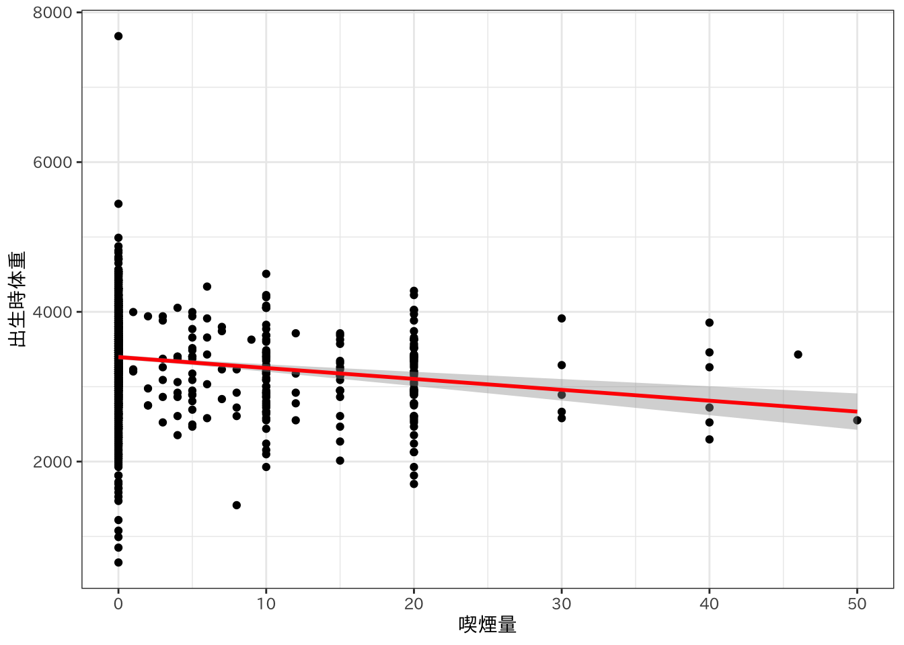

Chapter 6 母親の喫煙と新生児の出生時体重
ここでは，母親の喫煙が新生児の出生時体重に与える影響を分析しながら，実際にデータ分析を行う際の手順を概観する。分析に用いるのは，Wooldridgeの”Introductory Econometrics: A Modern Approach”で用いられているbwghtというデータである。Wooldridgeの教科書は，具体的な分析例が多く非常にわかりやすい，計量経済学の最高の入門書である。教科書のなかで用いられているデータは，Rにwooldridgeパッケージを追加することで，簡単に利用することができる。まず，wooldridgeパッケージをインストールしよう。
install.packages("wooldridge")6.1 データの要約
まず，データをbwghtというデータフレームに読み込む。その後，データがどのようなものかを知るために，glimpse()関数でデータの概要を表示させてみよう。
library(tidyverse)
library(stargazer)
library(wooldridge)
bwght <- bwght
glimpse(bwght)## Rows: 1,388
## Columns: 14
## $ faminc <dbl> 13.5, 7.5, 0.5, 15.5, 27.5, 7.5, 65.0, 27.5, 27.5, 37.5, 27.5…
## $ cigtax <dbl> 16.5, 16.5, 16.5, 16.5, 16.5, 16.5, 16.5, 16.5, 16.5, 16.5, 1…
## $ cigprice <dbl> 122.3, 122.3, 122.3, 122.3, 122.3, 122.3, 122.3, 122.3, 122.3…
## $ bwght <int> 109, 133, 129, 126, 134, 118, 140, 86, 121, 129, 101, 133, 61…
## $ fatheduc <int> 12, 6, NA, 12, 14, 12, 16, 12, 12, 16, 12, 16, NA, 12, 7, 13,…
## $ motheduc <int> 12, 12, 12, 12, 12, 14, 14, 14, 17, 18, 16, 15, 12, 12, 12, 1…
## $ parity <int> 1, 2, 2, 2, 2, 6, 2, 2, 2, 2, 2, 1, 3, 1, 1, 1, 1, 1, 1, 2, 1…
## $ male <int> 1, 1, 0, 1, 1, 1, 0, 0, 0, 0, 1, 1, 1, 1, 1, 1, 1, 0, 1, 0, 0…
## $ white <int> 1, 0, 0, 0, 1, 0, 1, 0, 1, 1, 0, 1, 0, 1, 0, 1, 1, 0, 0, 0, 1…
## $ cigs <int> 0, 0, 0, 0, 0, 0, 0, 0, 0, 0, 0, 0, 0, 0, 0, 0, 0, 0, 0, 0, 0…
## $ lbwght <dbl> 4.691348, 4.890349, 4.859812, 4.836282, 4.897840, 4.770685, 4…
## $ bwghtlbs <dbl> 6.8125, 8.3125, 8.0625, 7.8750, 8.3750, 7.3750, 8.7500, 5.375…
## $ packs <dbl> 0.0, 0.0, 0.0, 0.0, 0.0, 0.0, 0.0, 0.0, 0.0, 0.0, 0.0, 0.0, 0…
## $ lfaminc <dbl> 2.6026897, 2.0149031, -0.6931472, 2.7408400, 3.3141861, 2.014…データには，famincからlfamincまで14の変数が含まれており，サンプルサイズは1,388であることがわかる。つまり，1,388件の新生児の出生について，14項目のデータが記録されたデータである。各変数の内容は以下の通りである。
| 変数名 | 内容 |
|---|---|
| faminc | 家計収入(単位：1000ドル) |
| cigtax | 居住州のたばこ税 |
| cigprice | 居住州のたばこ価格 |
| bwght | 出生時体重(単位：オンス) |
| fatheduc | 父親の教育水準(修学年数) |
| motheduc | 母親の教育水準(修学年数) |
| parity | 子どもの出生順位 |
| male | 男児ダミー |
| white | 白人ダミー |
| cigs | 母親の妊娠中の一日当たり喫煙量(本数) |
| lbwght | bwghtの対数値 |
| packs | 母親の妊娠中の一日当たり喫煙量(箱数) |
| lfaminc | famincの対数値 |
次に，データの要約統計量を見ておこう。どのようなデータを分析する場合にも，まず要約統計量を確認することが重要である。もし変数に欠損値があったり，異常なデータが紛れ込んだりしている場合，要約統計量を確認することでそのことに気がつくことも多い。
summary(bwght)## faminc cigtax cigprice bwght
## Min. : 0.50 Min. : 2.00 Min. :103.8 Min. : 23.0
## 1st Qu.:14.50 1st Qu.:15.00 1st Qu.:122.8 1st Qu.:107.0
## Median :27.50 Median :20.00 Median :130.8 Median :120.0
## Mean :29.03 Mean :19.55 Mean :130.6 Mean :118.7
## 3rd Qu.:37.50 3rd Qu.:26.00 3rd Qu.:137.0 3rd Qu.:132.0
## Max. :65.00 Max. :38.00 Max. :152.5 Max. :271.0
##
## fatheduc motheduc parity male
## Min. : 1.00 Min. : 2.00 Min. :1.000 Min. :0.0000
## 1st Qu.:12.00 1st Qu.:12.00 1st Qu.:1.000 1st Qu.:0.0000
## Median :12.00 Median :12.00 Median :1.000 Median :1.0000
## Mean :13.19 Mean :12.94 Mean :1.633 Mean :0.5209
## 3rd Qu.:16.00 3rd Qu.:14.00 3rd Qu.:2.000 3rd Qu.:1.0000
## Max. :18.00 Max. :18.00 Max. :6.000 Max. :1.0000
## NA's :196 NA's :1
## white cigs lbwght bwghtlbs
## Min. :0.0000 Min. : 0.000 Min. :3.135 Min. : 1.438
## 1st Qu.:1.0000 1st Qu.: 0.000 1st Qu.:4.673 1st Qu.: 6.688
## Median :1.0000 Median : 0.000 Median :4.787 Median : 7.500
## Mean :0.7846 Mean : 2.087 Mean :4.760 Mean : 7.419
## 3rd Qu.:1.0000 3rd Qu.: 0.000 3rd Qu.:4.883 3rd Qu.: 8.250
## Max. :1.0000 Max. :50.000 Max. :5.602 Max. :16.938
##
## packs lfaminc
## Min. :0.0000 Min. :-0.6931
## 1st Qu.:0.0000 1st Qu.: 2.6741
## Median :0.0000 Median : 3.3142
## Mean :0.1044 Mean : 3.0713
## 3rd Qu.:0.0000 3rd Qu.: 3.6243
## Max. :2.5000 Max. : 4.1744
## このデータでは，新生児の出生時体重はオンスという単位で記録されている。しかし，オンスという単位にはあまり馴染みがないと思うので，これをグラムに変換しておこう。1オンスは28.3495グラムなので，以下のように新しい変数bwghtgramを作成する。
bwght <- bwght %>%
mutate(bwghtgram = bwght * 28.3495)次に，新生児の出生時体重はどのような分布になっているかを見ておこう。新しく作成したbwghtgramのヒストグラムを作成する。
bwght %>%
ggplot(aes(x = bwghtgram)) +
geom_histogram(binwidth = 200, color = "black", fill = "blue") +
labs(x = "出生時体重", y = "") +
theme_bw(base_family = "IPAexGothic")
ここでわれわれが分析したいのは，母親の妊娠中の喫煙数(本数)が新生児の出生時体重に与える影響である。そこで，母親の妊娠中の喫煙量(たばこの本数)の分布を見ておこう。
bwght %>%
ggplot(aes(x = cigs)) +
geom_histogram(binwidth = 1, color = "black", fill = "blue") +
labs(x = "喫煙量", y = "") +
theme_bw(base_family = "IPAexGothic")
1,388人中1,200人に近い母親は，妊娠中に喫煙していなかったことがわかる。一方で，妊娠中に喫煙していた母親も一定数いるため，喫煙の有無と新生児の出生時体重との関係を分析することには意味がありそうだ。
そこで，母親の妊娠中の喫煙数(本数)と新生児の出生時体重との関係を散布図で見てみよう。
bwght %>%
ggplot(aes(x = cigs, y = bwghtgram)) +
geom_point() +
labs(x = "喫煙量", y = "出生時体重") +
theme_bw(base_family = "IPAexGothic")
それほど明確にわかるわけではないが，母親の喫煙量が多いほど新生児の出生体重は低くなっているように見える。そこで，この2つの変数の相関係数を求めてみよう。
cor(select(bwght, bwght, cigs))## bwght cigs
## bwght 1.0000000 -0.1507618
## cigs -0.1507618 1.0000000相関係数は-0.15であり，母親の喫煙量と新生児の出生時体重には負の相関があることがわかる。
6.2 単回帰分析
相関係数は2変数間の線形関係の強さを表しているが，相関係数からは母親の喫煙量が1本増加すると新生児の出生時体重がどれだけ減少するかということを知ることはできない。そこで，さきほどの散布図に，母親の喫煙量と新生児の出生時体重の関係を近似する直線(回帰直線)を追加してみよう。
\(cigs\)の値が与えられたとき，\(bwghtgram\)の予測値\(\widehat{bwghtgram}\)を以下のような一次式で表す。 \[ \widehat{bwghtgram_i} = \hat{\beta_0} + \hat{\beta_1} cigs_i \] この近似式による新生児の出生時体重の予測値\(\widehat{bwghtgram}\)は，実際の\(bwghtgram\)の値とは一致しない。そこで，以下の損失関数が最も小さくなるような係数\(\hat{\beta_0},\hat{\beta_1}\)を求めるのが，最小二乗法である。 \[ L(\hat{\beta_0},\hat{\beta_1}) = \sum_{i=1}^n (bwghtgram_i-\widehat{bwghtgram_i})^2 \]
ざっくりいえば，散布図上のすべての点を通る直線は引くことができないので，できるだけ当てはまりの良い直線を見つけるというのが回帰分析である。当てはまりの良さの尺度はさまざまなものが考えられるが，最小二乗法では予測値と実際の値の差(残差という)の二乗の和を用いる。残差二乗和が最も小さくなるような直線によって2変数の関係を近似するのである。
散布図上に回帰直線を描くだけであれば，以下のようにggplotでstat_smooth()を追加すれば良い。
bwght %>%
ggplot(aes(x = cigs, y = bwghtgram)) +
geom_point() +
stat_smooth(method = "lm", color = "red", size = 1) + # 回帰直線を描く
labs(x = "喫煙量", y = "出生時体重") +
theme_bw(base_family = "IPAexGothic")## Warning: Using `size` aesthetic for lines was deprecated in ggplot2 3.4.0.
## ℹ Please use `linewidth` instead.## `geom_smooth()` using formula = 'y ~ x'
描かれた回帰直線は右下がりであり，母親の喫煙量が増加すれば新生児の出生時体重が減少することを示唆している。
この回帰直線の式は，lm()関数により求めることができる。lm()関数には，引数として回帰式とデータを渡す。回帰式はbwghtgram ~ cigsのように，~ の左に被説明変数を，右に説明変数を書く。回帰式の計算結果はsimple_regressionというオブジェクトを作成してそこに格納し，stargazer()関数を使って結果を表示させる。
simple_regression <- lm(bwghtgram ~ cigs, data = bwght)
stargazer(simple_regression, type = "text")##
## ===============================================
## Dependent variable:
## ---------------------------
## bwghtgram
## -----------------------------------------------
## cigs -14.565***
## (2.565)
##
## Constant 3,395.473***
## (16.226)
##
## -----------------------------------------------
## Observations 1,388
## R2 0.023
## Adjusted R2 0.022
## Residual Std. Error 570.635 (df = 1386)
## F Statistic 32.235*** (df = 1; 1386)
## ===============================================
## Note: *p<0.1; **p<0.05; ***p<0.01この結果は，\(\hat{\beta_0}\)が3,395.4，\(\hat{\beta_1}\)が-14.6であることを意味している。\(\hat{\beta_0}\)は定数項(Constant)や切片といわれ，\(cigs\)がゼロのときの\(\widehat{bwghtgram}\)である。\(\hat{\beta_1}\)は傾きで，\(cigs\)が1本増加したときにどれだけ\(\widehat{bwghtgram}\)が変化するかを表している。この場合，\(\hat{\beta_1}\)は-14.6であるから，母親の喫煙量が1本増加すれば，新生児の体重が14.6グラム減少する。
\(\hat{\beta_0}, \hat{\beta_1}\)の下の括弧内の数値は標準誤差である。係数についている*印は，係数の統計的有意性を表している。
6.3 重回帰分析
新生児の出生時体重に影響を与える要因は母親の喫煙だけではない。たとえば，家計収入は妊娠中の環境や栄養状態を通じて，新生児の出生時体重に影響を与えると考えられる。問題なのは，家計収入が低い家計の母親ほど喫煙量が多いとすれば，母親の喫煙量と新生児の出生時体重に相関があったとしても，実際に新生児の出生時体重に影響を与えているのは家計収入であって母親の喫煙量ではないかもしれないということである。そのため，家計収入が同じで母親の喫煙量が異なる場合に，新生児の出生時体重がどのように異なるかを分析することが必要である。
そこで以下のような回帰式を考えよう。 \[ \widehat{bwghtgram_i} = \hat{\beta_0} + \hat{\beta_1} cigs_i + \hat{\beta_2} faminc \] 説明変数が複数ある場合にも，最小自乗法を用いて\(\hat{\beta_0}, \hat{\beta_1}, \hat{\beta_2}\)を求めることができる。このとき，\(\hat{\beta_1}\)は，\(faminc\)を一定として\(cigs\)が1本増加したときにどれだけ\(\widehat{bwghtgram}\)が変化するかを表している。同様に，\(\hat{\beta_2}\)は\(cigs\)を一定として，\(faminc\)が1,000ドル増加したときにどれだけ\(\widehat{bwghtgram}\)が変化するかを表している。つまり重回帰分析を使えば，ほかの説明変数を一定として(計量経済学では「コントロールして」という)，着目する説明変数が変化したときに被説明変数がどのように変化するかを分析することができる。
説明変数が複数ある場合には，lm()関数の回帰式の右辺に説明変数を+で結んで書く。たとえば，被説明変数がbwghtgra，説明変数がcigsとfamincの回帰式は，bwghtgram ~ cigs + faminicと表す。
simple_regression <- lm(bwghtgram ~ cigs + faminc, data = bwght)
stargazer(simple_regression, type = "text")##
## ===============================================
## Dependent variable:
## ---------------------------
## bwghtgram
## -----------------------------------------------
## cigs -13.137***
## (2.596)
##
## faminc 2.630***
## (0.827)
##
## Constant 3,316.158***
## (29.738)
##
## -----------------------------------------------
## Observations 1,388
## R2 0.030
## Adjusted R2 0.028
## Residual Std. Error 568.771 (df = 1385)
## F Statistic 21.274*** (df = 2; 1385)
## ===============================================
## Note: *p<0.1; **p<0.05; ***p<0.01famincを説明変数に加えた結果，cigsの係数は単回帰の場合に比べて絶対値で少し小さくなった。すなわち，母親の喫煙量と新生児の出生時体重との相関の一部は家計収入の影響によるものである。しかし，家計収入が同じであっても，やはり母親の喫煙量が1本増加すれば新生児の出生時体重が13.1グラムは減少するということもわかる。また，母親の喫煙量が同じであれば，家計収入が1,000ドル増加すれば新生児の出生時体重が2.6グラム増加する。
もちろん，新生児の出生時体重に影響を与えるすべての要因を回帰式に含めることはできない。すべての要因がデータに記録されているわけではないからである。回帰式に含めることができない要因が説明変数と相関していれば，最小二乗法によって求めた係数にはバイアスが生じる。これを欠落変数バイアスという。たとえば，新生児の出生時体重に影響を与える要因が母親の喫煙量と家計収入の2つであるとすれば，新生児の出生時体重を説明するモデルの説明変数に家計収入を入れず母親の喫煙量だけで回帰すると，母親の喫煙量の効果の推定量には欠落変数バイアスが生じる。
欠落変数バイアスの問題を解決することは難しいが，どのようなバイアスが生じているかを考えることが重要である。また，少なくてもデータに記録されている要因はできるだけ説明変数に加えて回帰式を推定することが望ましい。
このデータセットには，新生児の性別や出生順位，両親の教育水準，人種が記録されている。そこで，これらの情報を用いて重回帰分析を行おう。
まず，分析に利用する変数だけを含むデータフレームdatasetを作成する。
dataset <- select(bwght, bwghtgram, cigs, lfaminc, parity, motheduc, fatheduc, male, white)レポートや論文を書くときには，分析に利用した変数の要約統計量を示す必要がある。レポートや論文に掲載する要約統計表を作成するには，stargazerパッケージが便利だ。
stargazer(dataset, type = "text", title = "要約統計表", digits = 2,
summary.stat = c("n", "mean", "sd", "min", "p25", "median", "p75", "max"))##
## 要約統計表
## ============================================================================
## Statistic N Mean St. Dev. Min Pctl(25) Median Pctl(75) Max
## ----------------------------------------------------------------------------
## bwghtgram 1,388 3,365.07 577.02 652.04 3,033.40 3,401.94 3,742.13 7,682.71
## cigs 1,388 2.09 5.97 0 0 0 0 50
## lfaminc 1,388 3.07 0.92 -0.69 2.67 3.31 3.62 4.17
## parity 1,388 1.63 0.89 1 1 1 2 6
## motheduc 1,387 12.94 2.38 2 12 12 14 18
## fatheduc 1,192 13.19 2.75 1 12 12 16 18
## male 1,388 0.52 0.50 0 0 1 1 1
## white 1,388 0.78 0.41 0 1 1 1 1
## ----------------------------------------------------------------------------次に，父親と母親の修学年数を除くすべての変数を説明変数として重回帰分析を行う。
simple_regression <- lm(bwghtgram ~ cigs + lfaminc + parity + male + white, data = bwght)
stargazer(simple_regression, type = "text")##
## ===============================================
## Dependent variable:
## ---------------------------
## bwghtgram
## -----------------------------------------------
## cigs -14.056***
## (2.572)
##
## lfaminc 32.790*
## (17.905)
##
## parity 50.981***
## (17.024)
##
## male 90.104***
## (30.280)
##
## white 159.457***
## (39.404)
##
## Constant 3,038.433***
## (66.918)
##
## -----------------------------------------------
## Observations 1,388
## R2 0.052
## Adjusted R2 0.048
## Residual Std. Error 562.887 (df = 1382)
## F Statistic 15.110*** (df = 5; 1382)
## ===============================================
## Note: *p<0.1; **p<0.05; ***p<0.01この結果の解釈は以下のようになる。
- 他の要因を一定として，母親の1日の喫煙量が1本増加すれば，新生児の出生時体重は14グラム減少する
- 他の要因を一定として，家計収入が1,000ドル増加すれば，新生児の出生時体重は33グラム増加する
- 他の要因を一定として，出生順位が1つ増加すれば，新生児の出生時体重は51グラム増加する
- 他の要因を一定として，男児の出生時体重は女児よりも90グラム重い
- 他の要因を一定として，白人の出生時体重は他の人種よりも159グラム重い
6.4 ダミー変数
上の重回帰分析で，maleやwhiteという説明変数を用いた。maleには新生児が男児であれば1，女児であれば0が記録されている。whiteには新生児が白人であれば1，それ以外の人種であれば0が記録されている。このように，数値では表すことができないカテゴリ情報を0と1によって表した変数をダミー変数という。ダミー変数を説明変数に用いた場合，その係数はどのように解釈できるだろうか。
いま，単純化のために以下のような回帰式を考えよう。 \[ \widehat{bwghtgram} = \hat{\beta}_0 + \hat{\beta}_1 cigs + \hat{\beta}_2 male \] もし新生児が男児であれば，male=1であるため，この回帰式は， \[ \widehat{bwghtgram} = \hat{\beta}_0 + \hat{\beta}_1 cigs + \hat{\beta}_2 \] となる。一方で，もし新生児が女児であれば，male=0であるため，この回帰式は， \[ \widehat{bwghtgram} = \hat{\beta}_0 + \hat{\beta}_1 cigs \] となる。すなわち，新生児が男児の場合と女児の場合では，出生時体重の予測値が\(\hat{\beta}_2\)だけ異なる。したがって，maleの係数の推定値\(\hat{\beta}_2\)は，他の要因を一定として(この場合は母親の喫煙量が同じであるとして)女児に比べて男児の出生時体重がどれだけ重いかということを表している。
カテゴリが3つ以上の場合には，カテゴリ数-1だけのダミー変数を作成して説明変数に用いる。たとえば，地域として北海道，本州，四国，九州・沖縄の4つのうちのどれかが記録されている変数があるとする。この場合には，本州を基準として，北海道ダミー，四国ダミー，九州・沖縄ダミーの3つのダミー変数を作成して説明変数として用いれば良い。